Normalisation is the operation of bringing indicators onto comparable scales so that they can be aggregated more fairly. To see why this is necessary, consider aggregating GDP values (billions or trillions of dollars) with percentage tertiary graduates (tens of percent). Average values here would make no sense because one is on a completely different scale to the other.
The normalisation function in COINr is imaginatively named
Normalise(). It has the following main features:
- A wide range of normalisation methods, including the possibility to pass custom functions
- Customisable parameters for normalisation
- Possibility to specify detailed individual treatment for each indicator
As of COINr v1.0, Normalise() is a generic function with
methods for different classes. This means that Normalise()
can be called on coins, but also on data frames, numeric vectors and
purses (time-indexed collections of coins).
Since Normalise() might be a bit over-complicated for
some applications, the qNormalise() function gives a
simpler interface which might be easier to use. See the Simplified normalisation
section.
Coins
The Normalise() method for coins follows the familiar
format: you have to specify:
-
xthe coin -
global_specsdefault specifications to apply to all indicators -
indiv_specsindividual specifications to overrideglobal_specsfor specific indicators, if required -
directionsa data frame specifying directions - this overrides the directions iniMetaif specified -
out2whether to output an updated coin or simply a data frame
Let’s begin with a simple example. We build the example coin and normalise the raw data.
library(COINr)
# build example coin
coin <- build_example_coin(up_to = "new_coin")
#> iData checked and OK.
#> iMeta checked and OK.
#> Written data set to .$Data$Raw
# normalise the raw data set
coin <- Normalise(coin, dset = "Raw")
#> Written data set to .$Data$NormalisedWe can compare one of the raw and un-normalised indicators side by side.
plot_scatter(coin, dsets = c("Raw", "Normalised"), iCodes = "Goods")
This plot also illustrates the linear nature of the min-max transformation.
The default normalisation uses the min-max approach, scaling
indicators onto the \([0, 100]\)
interval. But we can change the normalisation type and its parameters
using the global_specs argument.
coin <- Normalise(coin, dset = "Raw",
global_specs = list(f_n = "n_zscore",
f_n_para = list(c(10,2))))
#> Written data set to .$Data$Normalised
#> (overwritten existing data set)Again, let’s plot an example of the result:
plot_scatter(coin, dsets = c("Raw", "Normalised"), iCodes = "Goods")
Again, the z-score transformation is linear. It simply puts the resulting indicator on a different scale.
Notice the syntax of global_specs. If specified, it
takes entries f_n (the name of the function to apply to
each column) and f_n_para (any further arguments to
f_n, not including x). Importantly,
f_n_para must be specified as a list, even if it
only contains one parameter.
Note that COINr has a number of normalisation functions built
in, all of which are of the form n_*(), such as
n_minmax(), n_borda(), etc. Type
n_ in the R Studio console and press the Tab key to see a
list, or else browse the COINr functions alphabetically.
Calling external functions
Since f_n points to a function name, any function can be
passed to Normalise() as long as it is available in the
namespace. To illustrate, consider an example where we want to
categorise into discrete bins. We can use base R’s cut()
function for this purpose. We simply need to specify the number of bins.
We could directly call cut(), but for clarity we will
create a simple wrapper function around it, then pass that function to
Normalise().
# wrapper function
f_bin <- function(x, nbins){
cut(x, breaks = nbins, labels = FALSE)
}
# pass wrapper to normalise, specify 5 bins
coin <- Normalise(coin, dset = "Raw",
global_specs = list(f_n = "f_bin",
f_n_para = list(nbins = 5)))
#> Written data set to .$Data$Normalised
#> (overwritten existing data set)To illustrate the difference with the linear transformations above, we again plot the raw against normalised indicator:
plot_scatter(coin, dsets = c("Raw", "Normalised"), iCodes = "Goods")
Obviously this is not linear.
Generally, the requirements of a function to be passed to
Normalise() are that its first argument should be
x, a numeric vector, and it should return a numeric vector
of the same length as x. It should also be able to handle
NAs. Any further arguments can be passed via the
f_n_para entry.
Directions
By default, the directions are taken from the coin. These will have
been specified as the Direction column of
iMeta when constructing a coin with
new_coin(). However, you can specify different directions
using the directions argument of normalise():
in this case you need to specify a data frame with two columns:
iCode (with an entry for each indicator code found in the
target data set) and Direction giving the direction as -1
or 1.
To show an example, we take the existing directions from the coin, modify them slightly, and then run the normalisation function again:
# get directions from coin
directions <- coin$Meta$Ind[c("iCode", "Direction")]
head(directions, 10)
#> iCode Direction
#> 9 Goods 1
#> 10 Services 1
#> 11 FDI 1
#> 12 PRemit 1
#> 13 ForPort 1
#> 31 Renew 1
#> 32 PrimEner -1
#> 33 CO2 -1
#> 34 MatCon -1
#> 35 Forest -1We’ll change the direction of the “Goods” indicator and re-normalise:
# change Goods to -1
directions$Direction[directions$iCode == "Goods"] <- -1
# re-run (using min max default)
coin <- Normalise(coin, dset = "Raw", directions = directions)
#> Written data set to .$Data$Normalised
#> (overwritten existing data set)Individual normalisation
Finally let’s explore how to specify different normalisation methods
for different indicators. The indiv_specs argument takes a
named list for each indicator, and will override the specifications in
global_specs. If indiv_specs is specified, we
only need to include sub-lists for indicators that differ from
global_specs.
To illustrate, we can use a contrived example where we might want to
apply min-max to all indicators except two. For those, we apply a rank
transformation and distance to maximum approach. Note, that since the
default of global_specs is min-max, we don’t need to
specify that at all here.
# individual specifications:
# LPI - borda scores
# Flights - z-scores with mean 10 and sd 2
indiv_specs <- list(
LPI = list(f_n = "n_borda"),
Flights = list(f_n = "n_zscore",
f_n_para = list(m_sd = c(10, 2)))
)
# normalise
coin <- Normalise(coin, dset = "Raw", indiv_specs = indiv_specs)
#> Written data set to .$Data$Normalised
#> (overwritten existing data set)
# a quick look at the first three indicators
get_dset(coin, "Normalised")[1:4] |>
head(10)
#> uCode LPI Flights Ship
#> 1 AUS 36 9.889993 66.14497
#> 2 AUT 44 9.588735 0.00000
#> 3 BEL 45 9.711512 97.14314
#> 4 BGD 4 8.529810 45.80661
#> 5 BGR 7 8.741971 37.40495
#> 6 BRN 9 8.433044 35.38920
#> 7 CHE 42 10.563483 0.00000
#> 8 CHN 30 13.235114 100.00000
#> 9 CYP 14 8.721372 55.21211
#> 10 CZE 31 9.001961 0.00000This example is meant to be illustrative of the functionality of
Normalise(), rather than being a sensible normalisation
strategy, because the indicators are now on very different ranges.
In practice, if different normalisation strategies are selected, it is a good idea to keep the indicators on similar ranges, otherwise the effects will be very unequal in the aggregation step.
Use of targets
A particular type of normalisation is “distance to target”. This normalises indicators by the distance of each value to a specified target. Targets may often have a political or business meaning, such as e.g. emissions targets or sales targets.
Targets should be input into a coin using the iMeta
argument when building the coin using new_coin(). In fact,
the built-in example data has targets for all indicators:
head(ASEM_iMeta[c("iCode", "Target")])
#> iCode Target
#> 1 LPI 4.118031
#> 2 Flights 200.332655
#> 3 Ship 20.113377
#> 4 Bord 115.900000
#> 5 Elec 104.670585
#> 6 Gas 90.060420(Note that these targets are fabricated just for the purposes of an example)
To use distance-to-target normalisation, we call the
n_dist2targ() function. Like other built in normalisation
functions, this normalises a vector using a specified target. We can’t
use the f_n_para entry in Normalise() here
because this would only pass a single target value, whereas we need to
use a different target for each indicator.
However, COINr has a special case built in so that targets from
iMeta can be used automatically. Simply set
global_specs = list(f_n = "n_dist2targ"), and the
Normalise() function will automatically retrieve targets
from iMeta$Target. If targets are not present, this will
generate an error. Note that the directions of indicators are also
passed to n_dist2targ() - see that function documentation
for how the normalisation is performed depending on the direction
specified.
Our normalisation will then look like this:
It is also possible to specify the cap_max parameter of
n_dist2targ() as follows:
Data frames and vectors
Normalising a data frame is very similar to normalising a coin, except the input is a data frame and output is also a data frame.
mtcars_n <- Normalise(mtcars, global_specs = list(f_n = "n_dist2max"))
head(mtcars_n)
#> mpg cyl disp hp drat wt qsec vs am gear
#> 1 0.4510638 0.5 0.2217511 0.2049470 0.5253456 0.2830478 0.2333333 0 1 0.5
#> 2 0.4510638 0.5 0.2217511 0.2049470 0.5253456 0.3482485 0.3000000 0 1 0.5
#> 3 0.5276596 0.0 0.0920429 0.1448763 0.5023041 0.2063411 0.4892857 1 1 0.5
#> 4 0.4680851 0.5 0.4662010 0.2049470 0.1474654 0.4351828 0.5880952 1 0 0.0
#> 5 0.3531915 1.0 0.7206286 0.4346290 0.1797235 0.4927129 0.3000000 0 0 0.0
#> 6 0.3276596 0.5 0.3838863 0.1872792 0.0000000 0.4978266 0.6809524 1 0 0.0
#> carb
#> 1 0.4285714
#> 2 0.4285714
#> 3 0.0000000
#> 4 0.0000000
#> 5 0.1428571
#> 6 0.0000000As with coins, columns can be normalised with individual
specifications using the indiv_spec argument in exactly the
same way as with a coin. Note that non-numeric columns are always
ignored:
Normalise(iris) |>
head()
#> Sepal.Length Sepal.Width Petal.Length Petal.Width Species
#> 1 22.222222 62.50000 6.779661 4.166667 setosa
#> 2 16.666667 41.66667 6.779661 4.166667 setosa
#> 3 11.111111 50.00000 5.084746 4.166667 setosa
#> 4 8.333333 45.83333 8.474576 4.166667 setosa
#> 5 19.444444 66.66667 6.779661 4.166667 setosa
#> 6 30.555556 79.16667 11.864407 12.500000 setosaThere is also a method for numeric vectors, although usually it is just as easy to call the underlying normalisation function directly.
# example vector
x <- runif(10)
# normalise using distance to reference (5th data point)
x_norm <- Normalise(x, f_n = "n_dist2ref", f_n_para = list(iref = 5))
# view side by side
data.frame(x, x_norm)
#> x x_norm
#> 1 0.264778166 0.2871388
#> 2 0.097565604 0.1030661
#> 3 0.233549555 0.2527614
#> 4 0.490733679 0.5358775
#> 5 0.912344812 1.0000000
#> 6 0.462500497 0.5047976
#> 7 0.529693097 0.5787653
#> 8 0.129065170 0.1377418
#> 9 0.003939865 0.0000000
#> 10 0.463912330 0.5063518Purses
The purse method for normalise() is especially useful if
you are working with multiple coins and panel data. This is because to
make scores comparable from one time point to the next, it is usually a
good idea to normalise indicators together rather than separately. For
example, with the min-max method, indicators are typically normalised
using the minimum and maximum over all time points of data, as opposed
to having a separate max and min for each.
If indicators were normalised separately for each time point, then the highest scoring unit would get a score of 100 in time \(t\) (assuming min-max between 0 and 100), but the highest scoring unit in time \(t+1\) would also be assigned a score of 100. The underlying values of these two scores could be very different, but they would get
This means that the purse method for normalise() is a
bit different from most other purse methods, because it doesn’t
independently apply the function to each coin, but takes the coins all
together. This has the following implications:
- Any normalisation function can be applied globally to all coins in a purse, ensuring comparability. BUT:
- If normalisation is done globally, it is no longer possible to
automatically regenerate coins in the purse (i.e. using
regenerate()), because the coin is no longer self-contained: it needs to know the values of the other coins in the purse. Perhaps at some point I will add a dedicated method for regenerating entire purses, but we are not there yet.
Let’s anyway illustrate with an example. We build the example purse first.
purse <- build_example_purse(quietly = TRUE)Normalising a purse works in exactly the same way as normalising a
coin, except for the global argument. By default,
global = TRUE, which means that the normalisation will be
applied over all time points simultaneously, with the aim of making the
index comparable. Here, we will apply the default min-max approach to
all coins:
purse <- Normalise(purse, dset = "Raw", global = TRUE)
#> Written data set to .$Data$Normalised
#> (overwritten existing data set)
#> Written data set to .$Data$Normalised
#> (overwritten existing data set)
#> Written data set to .$Data$Normalised
#> (overwritten existing data set)
#> Written data set to .$Data$Normalised
#> (overwritten existing data set)
#> Written data set to .$Data$Normalised
#> (overwritten existing data set)Now let’s examine the data set of the first coin. We’ll see what the max and min of a few indicators is:
# get normalised data of first coin in purse
x1 <- get_dset(purse$coin[[1]], dset = "Normalised")
# get min and max of first four indicators (exclude uCode col)
sapply(x1[2:5], min, na.rm = TRUE)
#> LPI Flights Ship Bord
#> 0 0 0 0
sapply(x1[2:5], max, na.rm = TRUE)
#> LPI Flights Ship Bord
#> 83.98913 88.79325 85.91861 93.62416Here we see that the minimum values are zero, but the maximum values are not 100, because in other coins these indicators have higher values. To show that the global maximum is indeed 100, we can extract the whole normalised data set for all years and run the same check.
# get entire normalised data set for all coins in one df
x1_global <- get_dset(purse, dset = "Normalised")
# get min and max of first four indicators (exclude Time and uCode cols)
sapply(x1_global[3:6], min, na.rm = TRUE)
#> LPI Flights Ship Bord
#> 0 0 0 0
sapply(x1_global[3:6], max, na.rm = TRUE)
#> LPI Flights Ship Bord
#> 100 100 100 100And this confirms our expectations: that the global maximum and minimum are 0 and 100 respectively.
Any type of normalisation can be performed on a purse in this
“global” mode. However, keep in mind what is going on. Simply put, when
global = TRUE this is what happens:
- The data sets from each coin are joined together into one using the
get_dset()function. - Normalisation is applied to this global data set.
- The global data set is then split back into the coins.
So if you specify to normalise by e.g. rank, ranks will be calculated for all time points. Therefore, consider carefully if this fits the intended meaning.
Normalisation can also be performed independently on each coin, by
setting global = FALSE.
purse <- Normalise(purse, dset = "Raw", global = FALSE)
#> Written data set to .$Data$Normalised
#> (overwritten existing data set)
#> Written data set to .$Data$Normalised
#> (overwritten existing data set)
#> Written data set to .$Data$Normalised
#> (overwritten existing data set)
#> Written data set to .$Data$Normalised
#> (overwritten existing data set)
#> Written data set to .$Data$Normalised
#> (overwritten existing data set)
# get normalised data of first coin in purse
x1 <- get_dset(purse$coin[[1]], dset = "Normalised")
# get min and max of first four indicators (exclude uCode col)
sapply(x1[2:5], min, na.rm = TRUE)
#> LPI Flights Ship Bord
#> 0 0 0 0
sapply(x1[2:5], max, na.rm = TRUE)
#> LPI Flights Ship Bord
#> 100 100 100 100Now the normalised data set in each coin will have a min and max of 0 and 100 respectively, for each indicator.
Simplified normalisation
If the syntax of Normalise() looks a bit
over-complicated, you can use the simpler qNormalise()
function, which has less flexibility but makes the key function
arguments more visible (they are not wrapped in lists). This function
applies the same normalisation method to all indicators. It is also a
generic so can be used on data frames, coins and purses. Let’s
demonstrate on a data frame:
# some made up data
X <- data.frame(uCode = letters[1:10],
a = runif(10),
b = runif(10)*100)
X
#> uCode a b
#> 1 a 0.5671406 51.191956
#> 2 b 0.4073999 39.921469
#> 3 c 0.2970051 21.508661
#> 4 d 0.7254896 52.248659
#> 5 e 0.2621983 42.991491
#> 6 f 0.1876648 48.058811
#> 7 g 0.6698319 3.047948
#> 8 h 0.5834507 89.283235
#> 9 i 0.8480782 28.933295
#> 10 j 0.6403004 41.732390By default, normalisation results in min-max on the \([0, 100]\) interval:
qNormalise(X)
#> uCode a b
#> 1 a 57.46035 55.82866
#> 2 b 33.27237 42.75920
#> 3 c 16.55634 21.40738
#> 4 d 81.43760 57.05404
#> 5 e 11.28589 46.31926
#> 6 f 0.00000 52.19541
#> 7 g 73.00989 0.00000
#> 8 h 59.93003 100.00000
#> 9 i 100.00000 30.01712
#> 10 j 68.53822 44.85918We can pass another normalisation function if we like, and the syntax
is a bit easier than Normalise():
qNormalise(X, f_n = "n_dist2ref", f_n_para = list(iref = 1, cap_max = TRUE))
#> uCode a b
#> 1 a 1.0000000 1.0000000
#> 2 b 0.5790491 0.7659005
#> 3 c 0.2881350 0.3834478
#> 4 d 1.0000000 1.0000000
#> 5 e 0.1964117 0.8296680
#> 6 f 0.0000000 0.9349214
#> 7 g 1.0000000 0.0000000
#> 8 h 1.0000000 1.0000000
#> 9 i 1.0000000 0.5376650
#> 10 j 1.0000000 0.8035152The qNormalise() function works in a similar way for
coins and purses.